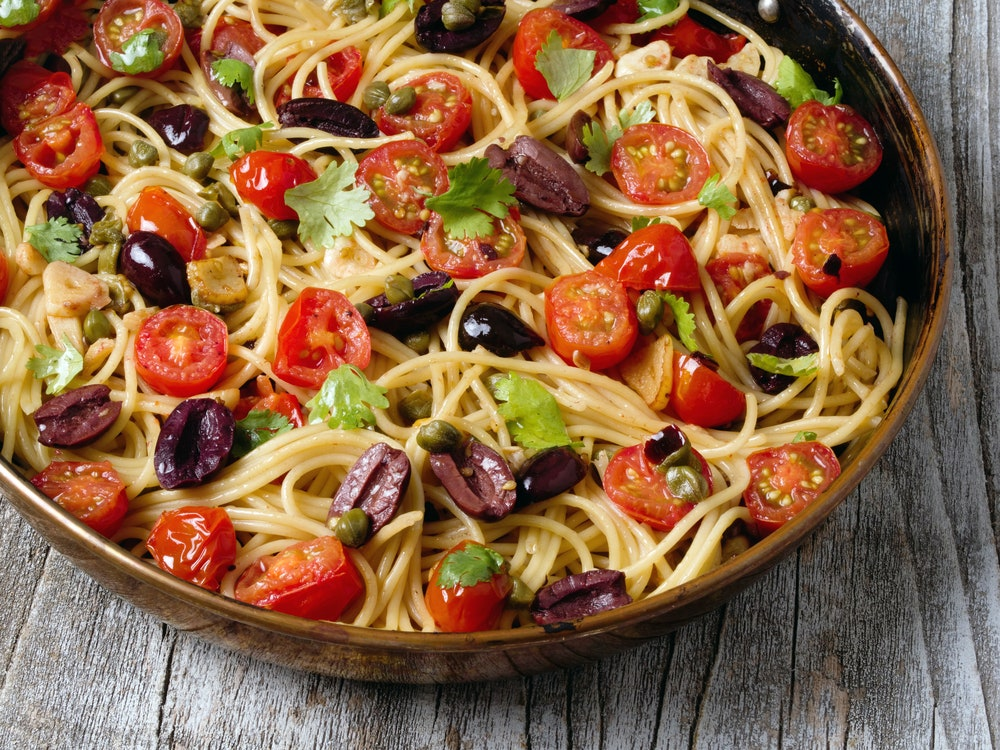

Putanesca

Składniki:
- 500g spaghetti
- 1 lub 2 puszki pomidorów
- łyżka miso / kostka rosołowa
- 1,5 łyżki tahini
- 1 cebula
- 2 ząbki czosnku
- garść oliwek
- garść suszonych pomidorów
- garść kaparów
- trochę oliwy
- 1,5 litra wody
Przygotowanie:
- Zagotuj wodę w czajniku
- Potnij cebulę i czosnek na małe kawałki
- Zacznij podsmażać na dużej głębokiej patelni na jekiejś oliwie
- Potnij suszone pomidory i oliwki
- Jak cebula będzie już podsmażona zmniejsz ogień
- Wrzuć makaron, tahini, miso, kostkę rosołową, pomidory (suszone i te z
puszki), oliwki i kapary
- zalej wszystko wrzątkiem i spowrotem zwiększ ogień
- Gotuj pod przykryciem około 15 minut od czasu do czasu mieszając, jeżeli
będzie zbyt wodniste to zdejmi pokrywkę, jeżel będzie zamało wodniste
dolej wody.